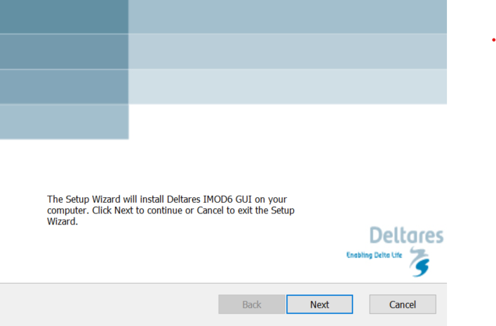
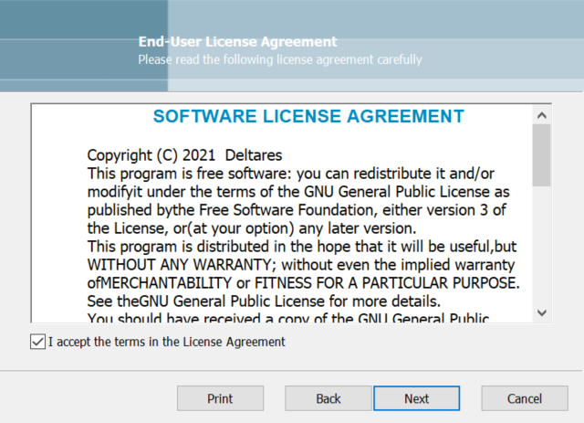
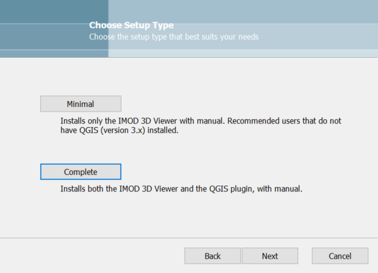
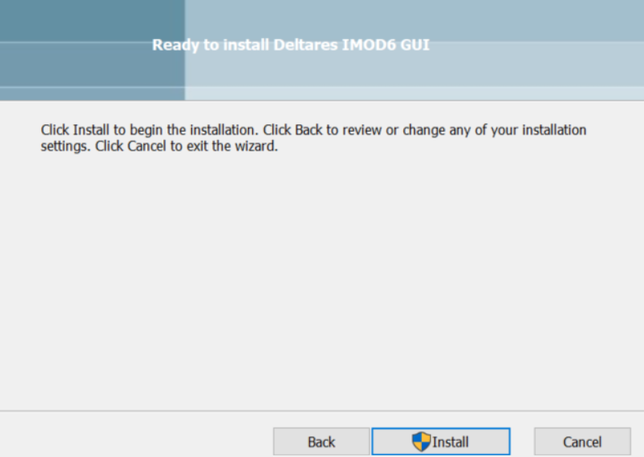
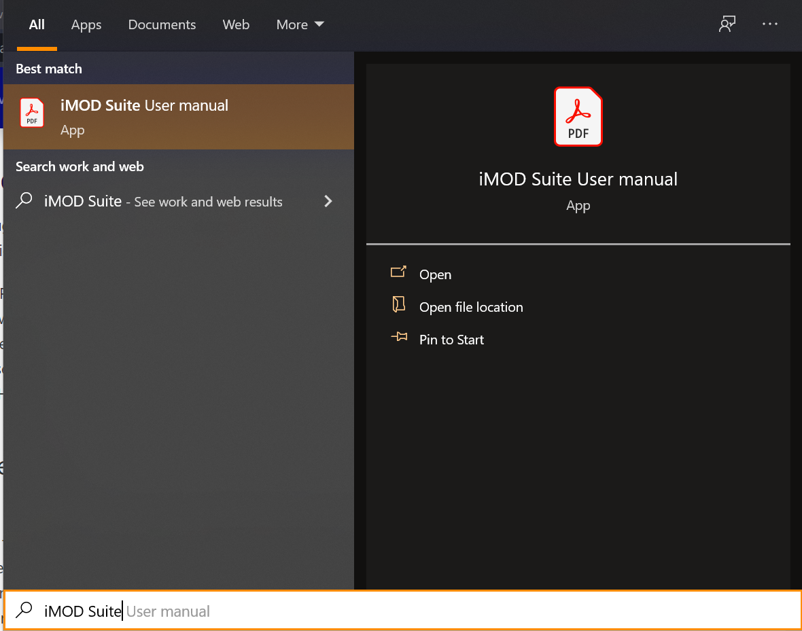

Install iMOD Viewer with the Deltares setup
To install the iMOD Viewer components (3D Viewer & QGIS plugin), download the installer on the Deltares download portal. If the subscription worked correctly, you will receive a download link via e-mail within only a few minutes.
The QGIS plugin of course requires QGIS. You can download the standalone QGIS setup on the QGIS website We recommend downloading a QGIS version > 3.18 here. After downloading the QGIS setup, run it.
Unzip the zipfile, which includes the viewer installer. Double click the .msi file.
This will open up the first screen of the setup wizard.

Click Next here, which will open up the next screen, which is the license screen.

Tick the "I accept" tickbox, and click Next.
This will open up the installation selection screen.

You can select a Minimal or Complete installation here, by clicking the respective buttons.
Note that the QGIS plugin, which comes only with a Complete install, is required to use all features of the iMOD viewer. These are:
- Drawing fence diagrams
- Loading only a sub section of the map (useful for large files)
- Access to more legends.
After selecting the preferred installation type, you still have to click Next before installation continues.
This will open the install screen.

Click Install and after installation is complete, click Finalize. You should now be ready to go.
The installer will also create a program shortcut to the pdf with documentation. If you open the Windows Start window and type "iMOD Suite User Manual" it should pop up.
